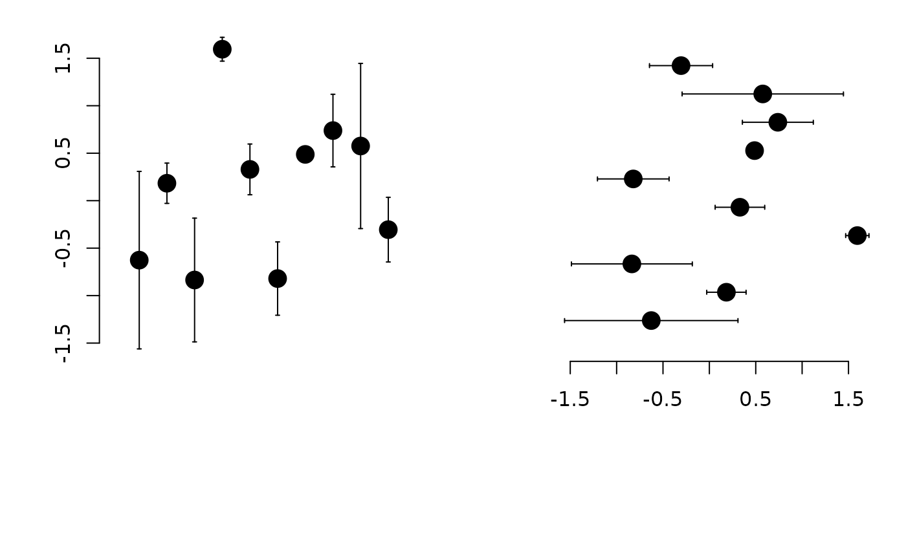
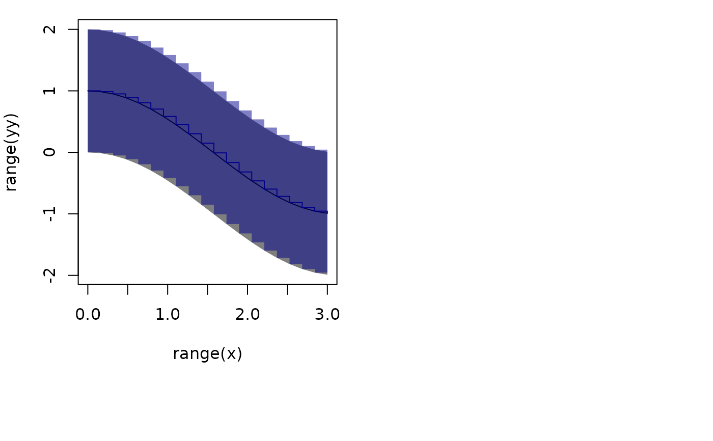
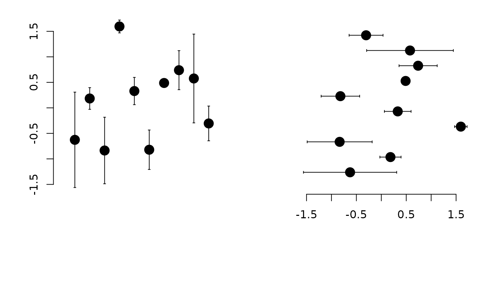
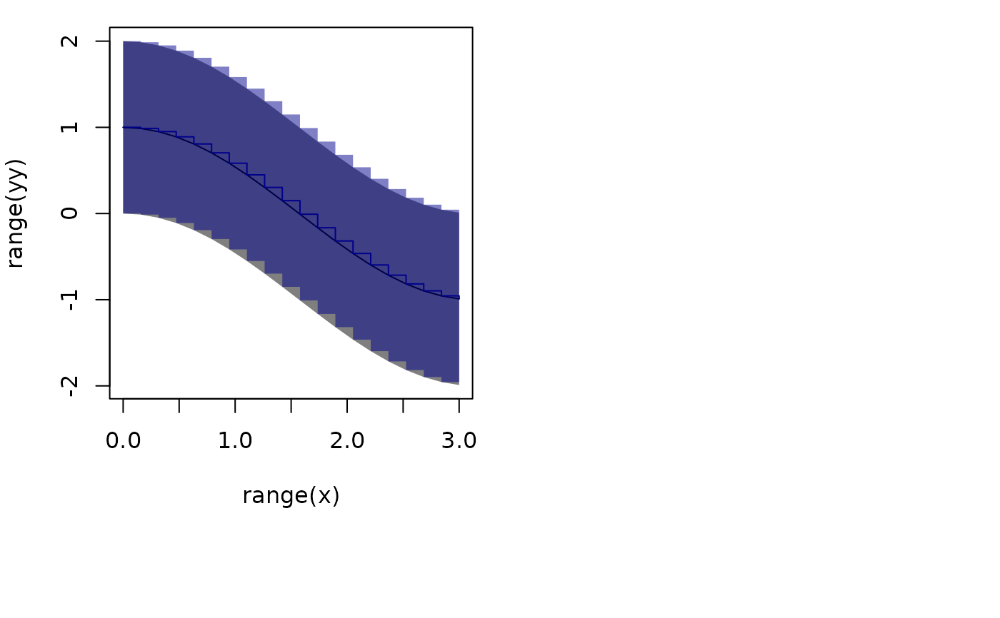

Add Confidence limits bar to plot
confband(
x,
lower,
upper,
center = NULL,
line = TRUE,
delta = 0.07,
centermark = 0.03,
pch,
blank = TRUE,
vert = TRUE,
polygon = FALSE,
step = FALSE,
...
)Arguments
- x
Position (x-coordinate if vert=TRUE, y-coordinate otherwise)
- lower
Lower limit (if NULL no limits is added, and only the center is drawn (if not NULL))
- upper
Upper limit
- center
Center point
- line
If FALSE do not add line between upper and lower bound
- delta
Length of limit bars
- centermark
Length of center bar
- pch
Center symbol (if missing a line is drawn)
- blank
If TRUE a white ball is plotted before the center is added to the plot
- vert
If TRUE a vertical bar is plotted. Otherwise a horizontal bar is used
- polygon
If TRUE polygons are added between 'lower' and 'upper'.
- step
Type of polygon (step-function or piecewise linear)
- ...
Additional low level arguments (e.g. col, lwd, lty,...)
See also
confband
Examples
plot(0,0,type="n",xlab="",ylab="")
confband(0.5,-0.5,0.5,0,col="darkblue")
confband(0.8,-0.5,0.5,0,col="darkred",vert=FALSE,pch=1,cex=1.5)
 set.seed(1)
K <- 20
est <- rnorm(K)
se <- runif(K,0.2,0.4)
x <- cbind(est,est-2*se,est+2*se,runif(K,0.5,2))
x[c(3:4,10:12),] <- NA
rownames(x) <- unlist(lapply(letters[seq(K)],function(x) paste(rep(x,4),collapse="")))
rownames(x)[which(is.na(est))] <- ""
signif <- sign(x[,2])==sign(x[,3])
forestplot(x,text.right=FALSE)
set.seed(1)
K <- 20
est <- rnorm(K)
se <- runif(K,0.2,0.4)
x <- cbind(est,est-2*se,est+2*se,runif(K,0.5,2))
x[c(3:4,10:12),] <- NA
rownames(x) <- unlist(lapply(letters[seq(K)],function(x) paste(rep(x,4),collapse="")))
rownames(x)[which(is.na(est))] <- ""
signif <- sign(x[,2])==sign(x[,3])
forestplot(x,text.right=FALSE)
 forestplot(x[,-4],sep=c(2,15),col=signif+1,box1=TRUE,delta=0.2,pch=16,cex=1.5)
forestplot(x[,-4],sep=c(2,15),col=signif+1,box1=TRUE,delta=0.2,pch=16,cex=1.5)
 forestplot(x,vert=TRUE,text=FALSE)
forestplot(x,vert=TRUE,text=FALSE)
 forestplot(x,vert=TRUE,text=FALSE,pch=NA)
forestplot(x,vert=TRUE,text=FALSE,pch=NA)
 ##forestplot(x,vert=TRUE,text.vert=FALSE)
##forestplot(val,vert=TRUE,add=TRUE)
z <- seq(10)
zu <- c(z[-1],10)
plot(z,type="n")
confband(z,zu,rep(0,length(z)),col=Col("darkblue"),polygon=TRUE,step=TRUE)
confband(z,zu,zu-2,col=Col("darkred"),polygon=TRUE,step=TRUE)
##forestplot(x,vert=TRUE,text.vert=FALSE)
##forestplot(val,vert=TRUE,add=TRUE)
z <- seq(10)
zu <- c(z[-1],10)
plot(z,type="n")
confband(z,zu,rep(0,length(z)),col=Col("darkblue"),polygon=TRUE,step=TRUE)
confband(z,zu,zu-2,col=Col("darkred"),polygon=TRUE,step=TRUE)
 z <- seq(0,1,length.out=100)
plot(z,z,type="n")
confband(z,z,z^2,polygon="TRUE",col=Col("darkblue"))
z <- seq(0,1,length.out=100)
plot(z,z,type="n")
confband(z,z,z^2,polygon="TRUE",col=Col("darkblue"))
 set.seed(1)
k <- 10
x <- seq(k)
est <- rnorm(k)
sd <- runif(k)
val <- cbind(x,est,est-sd,est+sd)
par(mfrow=c(1,2))
plot(0,type="n",xlim=c(0,k+1),ylim=range(val[,-1]),axes=FALSE,xlab="",ylab="")
axis(2)
confband(val[,1],val[,3],val[,4],val[,2],pch=16,cex=2)
plot(0,type="n",ylim=c(0,k+1),xlim=range(val[,-1]),axes=FALSE,xlab="",ylab="")
axis(1)
confband(val[,1],val[,3],val[,4],val[,2],pch=16,cex=2,vert=FALSE)

x <- seq(0, 3, length.out=20)
y <- cos(x)
yl <- y - 1
yu <- y + 1
plot_region(x, y, yl, yu)
plot_region(x, y, yl, yu, type='s', col="darkblue", add=TRUE)

set.seed(1)
k <- 10
x <- seq(k)
est <- rnorm(k)
sd <- runif(k)
val <- cbind(x,est,est-sd,est+sd)
par(mfrow=c(1,2))
plot(0,type="n",xlim=c(0,k+1),ylim=range(val[,-1]),axes=FALSE,xlab="",ylab="")
axis(2)
confband(val[,1],val[,3],val[,4],val[,2],pch=16,cex=2)
plot(0,type="n",ylim=c(0,k+1),xlim=range(val[,-1]),axes=FALSE,xlab="",ylab="")
axis(1)
confband(val[,1],val[,3],val[,4],val[,2],pch=16,cex=2,vert=FALSE)

x <- seq(0, 3, length.out=20)
y <- cos(x)
yl <- y - 1
yu <- y + 1
plot_region(x, y, yl, yu)
plot_region(x, y, yl, yu, type='s', col="darkblue", add=TRUE)
